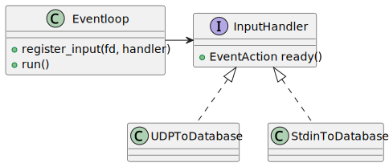

A Naive C++ Eventloop (poll())#
Readability, And OO#
In Solution: Read From Two Input Sources, we react on two different file descriptors in two different ways
Two is one representation of many
⟶ Complication ahead; for example …
signalfd(): handleSIGTERMandSIGINTto terminate gracefullysignalfd(): useSIGUSR1to commit databasesignalfd(): useSIGUSR2to rollback databaseTimers using
timerfd_create()More network I/O
…
Eventloop, And Associated Types#

Eventloop: central “loop” objectReplacement for
whileloop in Solution: Read From Two Input SourcesUses
poll()to watch registered file descriptorsCalls back associated
InputHandlerobjects when it detects input (POLLIN) readiness (see Possible Events)
InputHandler: handle input detected on a file descriptorPolymorphic type: abstract base class, an interface
Usually reads from its file descriptor, and does something with the data
Re-Designing The Database Application#
With the building blocks outlined above, redesign our database application
⟶ Abstraction is cool
⟶ Do not need to know everything
{kind=link}
Re-Writing The Database Application#
Externalize building blocks from the diagram into separate files (see Building Blocks In Detail)
Functionality is equivalent to the spaghetti implementation
See here for the test protocol
#include "database.h"
#include "eventloop.h"
#include "udp-db.h"
#include "stdin-db.h"
int main()
{
Eventloop loop; // <-- main loop
Database db;
UDPToDatabase udp("0.0.0.0", 1234, db); // <-- satellite
StdinToDatabase stdin(db); // <-- satellite
udp.hookup(loop); // <-- register with loop
stdin.hookup(loop); // <-- register with loop
loop.run(); // <-- run until quit
db.commit();
return 0;
};
Building Blocks In Detail#
Types |
Download |
View |
|
||
|
||
|
||
|